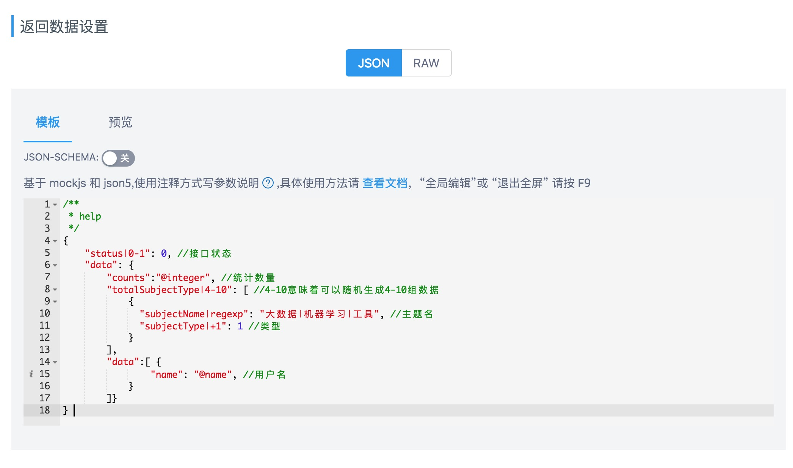
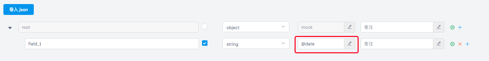
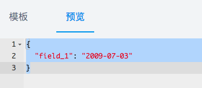
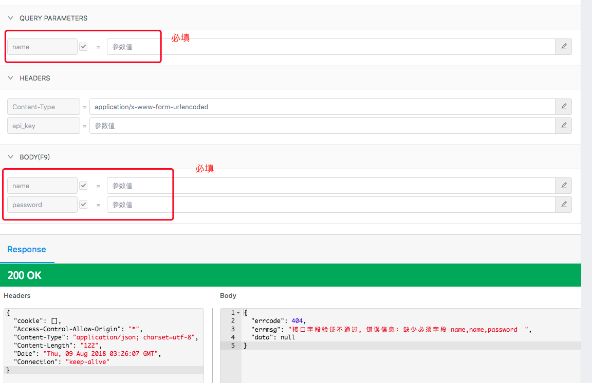
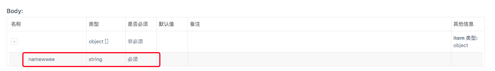
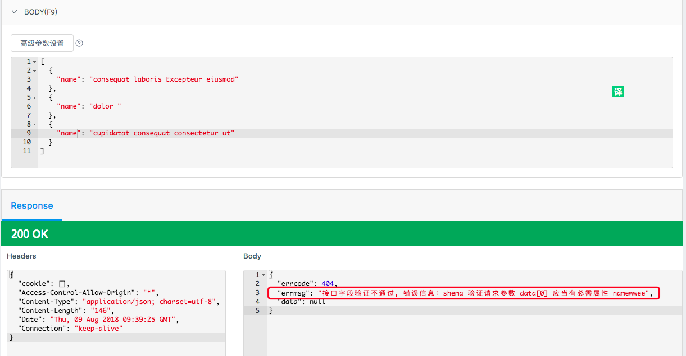

<!DOCTYPE html><html lang="zh-CN"><head><meta charSet="UTF-8"/><meta content="text/html; charset=utf-8" http-equiv="Content-Type"/><meta http-equiv="X-UA-Compatible" content="IE=edge"/><meta name="viewport" content="width=device-width, initial-scale=1, maximum-scale=1"/><meta name="apple-mobile-web-app-capable" content="yes"/><meta name="apple-mobile-web-app-status-bar-style" content="black"/><link rel="apple-touch-icon" sizes="180x180" href="../ydoc/images/apple-touch-icon.png"/><link rel="icon" type="image/png" sizes="32x32" href="../ydoc/images/favicon-32x32.png"/><link rel="icon" type="image/png" sizes="16x16" href="../ydoc/images/favicon-16x16.png"/><link rel="manifest" href="../ydoc/images/manifest.json"/><link rel="mask-icon" href="../ydoc/images/safari-pinned-tab.svg" color="#5bbad5"/><meta name="theme-color" content="#ffffff"/><meta http-equiv="Cache-Control" content="no-transform"/><meta http-equiv="Cache-Control" content="no-siteapp"/><title>Mock介绍-教程</title><link rel="stylesheet" href="../ydoc/styles/style.css"/><meta name="author" content="ymfe"/><meta name="keywords" content="api管理,接口管理,接口文档,api文档"/><meta name="description" content="YApi 是高效、易用、功能强大的 api 管理平台，旨在为开发、产品、测试人员提供更优雅的接口管理服务。可以帮助开发者轻松创建、发布、维护 API，YApi 还为用户提供了优秀的交互体验，开发人员只需利用平台提供的接口数据写入工具以及简单的点击操作就可以实现接口的管理"/><meta id="releativePath" content=".."/><link rel="stylesheet" href="../ydoc/ydoc-plugin-search/search.css"/><link rel="stylesheet" href="../ydoc/ydoc-plugin-search/search.css"/><link rel="stylesheet" href="../ydoc/ydoc-plugin-img-view/imgView.css"/><link rel="stylesheet" href="../web.css"/></head><body><div class="g-doc"><div class="m-aside"><div class="m-summary" id="js-menu"><div class="m-summary-content" id="js-menu-content"><div class="m-summary-block"><div class="m-summary-title">快速上手</div><ul class="m-summary-list indent"><li class="item"><a href="index.html" class="href">认识YApi</a></li><li class="item"><a href="quickstart.html" class="href">创建第一个API</a></li></ul></div><div class="m-summary-block"><div class="m-summary-title">进阶篇</div><ul class="m-summary-list indent"><li class="item"><a href="manage.html" class="href">权限</a></li><li class="item"><div class="m-summary-block"><a href="project.html" class="href">项目操作</a><ul class="m-summary-list indent"><li class="item"><a href="project.html#%e5%9f%ba%e6%9c%ac%e8%ae%be%e7%bd%ae" class="href">基本设置</a></li><li class="item"><a href="project.html#%e6%96%b0%e5%bb%ba%e9%a1%b9%e7%9b%ae" class="href">新建项目</a></li><li class="item"><a href="project.html#%e4%bf%ae%e6%94%b9%e9%a1%b9%e7%9b%ae" class="href">修改项目</a></li><li class="item"><a href="project.html#%e9%a1%b9%e7%9b%ae%e8%bf%81%e7%a7%bb" class="href">项目迁移</a></li><li class="item"><a href="project.html#%e9%a1%b9%e7%9b%ae%e6%8b%b7%e8%b4%9d" class="href">项目拷贝</a></li><li class="item"><a href="project.html#%e9%85%8d%e7%bd%ae%e7%8e%af%e5%a2%83" class="href">配置环境</a></li><li class="item"><a href="project.html#%e8%af%b7%e6%b1%82%e9%85%8d%e7%bd%ae" class="href">请求配置</a></li><li class="item"><a href="project.html#token" class="href">token配置</a></li><li class="item"><a href="project.html#%e5%85%a8%e5%b1%80mock" class="href">全局mock</a></li></ul></div></li><li class="item"><div class="m-summary-block"><a href="api.html" class="href">接口操作</a><ul class="m-summary-list indent"><li class="item"><a href="api.html#%e6%8e%a5%e5%8f%a3%e9%85%8d%e7%bd%ae" class="href">接口设置</a></li><li class="item"><a href="api.html#%e6%8e%a5%e5%8f%a3%e8%bf%90%e8%a1%8c" class="href">接口运行</a></li></ul></div></li><li class="item"><div class="m-summary-block"><a href="" class="href">数据Mock</a><ul class="m-summary-list indent"><li class="item"><a href="mock.html#方式1.-mockjs" class="href">方式1. mockjs</a></li><li class="item"><a href="mock.html#方式2.-json-schema" class="href">方式2. json-schema</a></li><li class="item"><a href="mock.html#如何使用-mock" class="href">如何使用</a></li><li class="item"><a href="mock.html#mock%e8%af%b7%e6%b1%82%e4%b8%a5%e6%a0%bc%e6%a8%a1%e5%bc%8f" class="href">严格模式</a></li></ul></div></li><li class="item"><div class="m-summary-block"><a href="adv_mock.html" class="href">高级Mock</a><ul class="m-summary-list indent"><li class="item"><a href="adv_mock.html#mock-期望" class="href">Mock 期望</a></li><li class="item"><a href="adv_mock.html#自定义-mock-脚本" class="href">自定义脚本</a></li></ul></div></li><li class="item"><div class="m-summary-block"><a href="case.html" class="href">自动化测试</a><ul class="m-summary-list indent"><li class="item"><a href="case.html#%e7%ac%ac%e4%b8%80%e6%ad%a5%ef%bc%8c%e6%b5%8b%e8%af%95%e9%9b%86%e5%90%88" class="href">第一步，测试集合</a></li><li class="item"><a href="case.html#%e7%ac%ac%e4%ba%8c%e6%ad%a5%ef%bc%8c%e7%bc%96%e8%be%91%e6%b5%8b%e8%af%95%e7%94%a8%e4%be%8b" class="href">第二步，编辑测试用例</a></li><li class="item"><a href="case.html#%e7%ac%ac%e4%b8%89%e6%ad%a5%ef%bc%8c%e8%bf%90%e8%a1%8c%e8%87%aa%e5%8a%a8%e5%8c%96%e6%b5%8b%e8%af%95" class="href">第三步，运行自动化测试</a></li><li class="item"><a href="case.html#%e6%96%ad%e8%a8%80%e8%84%9a%e6%9c%ac%e5%85%ac%e5%85%b1%e5%8f%98%e9%87%8f" class="href">断言脚本公共变量</a></li><li class="item"><a href="case.html#%e6%9c%8d%e5%8a%a1%e7%ab%af%e8%87%aa%e5%8a%a8%e5%8c%96%e6%b5%8b%e8%af%95" class="href">服务端自动化测试</a></li></ul></div></li><li class="item"><div class="m-summary-block"><a href="data.html" class="href">数据导入</a><ul class="m-summary-list indent"><li class="item"><a href="data.html#postman-数据导入" class="href">Postman 数据导入</a></li><li class="item"><a href="data.html#har-数据导入" class="href">HAR 数据导入</a></li><li class="item"><a href="data.html#swagger-数据导入" class="href">Swagger 数据导入</a></li><li class="item"><a href="data.html#yapi%e6%8e%a5%e5%8f%a3json%e6%95%b0%e6%8d%ae%e5%af%bc%e5%85%a5" class="href">JSON 数据导入</a></li><li class="item"><a href="data.html#%e9%80%9a%e8%bf%87%e5%91%bd%e4%bb%a4%e8%a1%8c%e5%af%bc%e5%85%a5%e6%8e%a5%e5%8f%a3%e6%95%b0%e6%8d%ae" class="href">通过命令行导入接口数据</a></li></ul></div></li><li class="item"><a href="export-data.html" class="href">数据导出</a></li></ul></div><div class="m-summary-block"><div class="m-summary-title">自定义</div><ul class="m-summary-list indent"><li class="item"><div class="m-summary-block"><a href="plugin-index.html" class="href">插件</a><ul class="m-summary-list indent"><li class="item"><a href="plugin-dev.html" class="href">插件开发</a></li><li class="item"><a href="plugin-list.html" class="href">插件列表</a></li><li class="item"><a href="plugin-hooks.html" class="href">钩子</a></li></ul></div></li><li class="item"><a href="redev.html" class="href">二次开发</a></li></ul></div><div class="m-summary-block"><ul class="m-summary-list"><li class="item"><a href="qa.html" class="href">常见问题解答</a></li><li class="item"><a href="CHANGELOG.html" class="href">版本记录</a></li></ul></div></div></div><div class="m-summary-switch" id="js-summary-switch"><svg viewBox="0 0 926.23699 573.74994" version="1.1" x="0px" y="0px" width="15" height="15" class="bottom"><g transform="translate(904.92214,-879.1482)"><path d="m -673.67664,1221.6502 -231.2455,-231.24803 55.6165,-55.627 c 30.5891,-30.59485 56.1806,-55.627 56.8701,-55.627 0.6894,0 79.8637,78.60862 175.9427,174.68583 l 174.6892,174.6858 174.6892,-174.6858 c 96.079,-96.07721 175.253196,-174.68583 175.942696,-174.68583 0.6895,0 26.281,25.03215 56.8701,55.627 l 55.6165,55.627 -231.245496,231.24803 c -127.185,127.1864-231.5279,231.248 -231.873,231.248 -0.3451,0 -104.688,-104.0616 -231.873,-231.248 z" fill="#fff"></path></g></svg><svg viewBox="0 0 926.23699 573.74994" version="1.1" x="0px" y="0px" width="15" height="15" class="top"><g id="Page-1" stroke="none" stroke-width="1" fill="none" fill-rule="evenodd"><g id="aaa" fill="#fff" fill-rule="nonzero"><path d="M231.2455,342.502 L0,111.25397 L55.6165,55.62697 C86.2056,25.03212 111.7971,-2.99999998e-05 112.4866,-2.99999998e-05 C113.176,-2.99999998e-05 192.3503,78.60859 288.4293,174.6858 L463.1185,349.3716 L637.8077,174.6858 C733.8867,78.60859 813.060896,-2.99999997e-05 813.750396,-2.99999997e-05 C814.439896,-2.99999997e-05 840.031396,25.03212 870.620496,55.62697 L926.236996,111.25397 L694.9915,342.502 C567.8065,469.6884 463.4636,573.75 463.1185,573.75 C462.7734,573.75 358.4305,469.6884 231.2455,342.502 Z" id="Shape" transform="translate(463.118498, 286.874985) scale(1, -1) translate(-463.118498, -286.874985) "></path></g></g></svg></div></div><div class="m-main" id="js-panel"><header class="m-header" id="js-header"><div class="m-header-title js-logo"><a href="../index.html" target="_self"><h6 class="name">YApi</h6></a></div><div><div class="m-search">
      <div class="icon">&#xf0fd;</div>
      <input type="text" class="input js-input" placeholder="搜索" />
      <div class="m-search-result js-search-result"></div>
    </div>
<div class="m-search">
      <div class="icon">&#xf0fd;</div>
      <input type="text" class="input js-input" placeholder="搜索" />
      <div class="m-search-result js-search-result"></div>
    </div></div><nav class="m-header-nav js-nav"><ul class="m-header-items"><li class="item active"><a class="href" href="index.html">教程</a></li><li class="item "><a class="href" href="../devops/index.html">内网部署</a></li><li class="item "><a class="href" href="../openapi.html">开放Api</a></li></ul></nav><div id="js-nav-btn" class="m-header-btn ui-font-ydoc"></div></header><div class="m-content" id="js-content"><div id="markdown-body" class="m-content-container markdown-body"><h1>Mock介绍</h1>
 <p style="text-indent:2em;line-height:1.8em">YApi的 Mock 功能可以根据用户的输入接口信息如协议、URL、接口名、请求头、请求参数、返回数据（[返回数据](#mock)）生成 Mock 接口，这些接口会自动生成模拟数据，创建者可以自由构造需要的数据。 </p>
<p><strong>mock地址解析</strong>：<code>YApi平台网址 + mock + 您的项目id + 接口实际请求path</code></p>
<p>假设你 YApi 的部署地址为：http://yapi.xxx.com 然后用这个地址作为示例</p>
<pre><code>mockd 地址： http://yapi.xxx.com/mock/29/api/hackathon/login
</code></pre>
<blockquote>
<p>注：项目 id 可以在项目设置里查看到</p>
</blockquote>
<h2 id="定义-mock-数据示例">定义 mock 数据示例</h2>
<p>项目 -&gt; 接口编辑 -&gt; 返回数据设置</p>
<p>返回数据设置有两种方式，最新版本默认是基于 <code>json+注释</code> 的方式，另外一种是基于 <code>json-schema</code> 定义数据结构,请根据实际情况灵活选择使用。</p>
<h2 id="方式1.-mockjs">方式1. mockjs</h2>

<h3 id="方式1.-mockjs-原理">原理</h3>
<p>基于 <a href="http://mockjs.com" target="_blank">mockjs</a>，跟 Mockjs 区别是 yapi 基于 json + 注释 定义 mock 数据，无法使用 mockjs 原有的函数功能。</p>
<ol>
<li>正则表达式需要基于 rule 书写，示例如下：</li>
</ol>
<pre><code>{
  &#x22;name|regexp&#x22;: &#x22;[a-z0-9_]+?&#x22;,
  &#x22;type|regexp&#x22;: &#x22;json|text|xml&#x22;
}

</code></pre>
<ol start="2">
<li>支持替换请求的 query, body 参数</li>
</ol>
<pre><code>{
  &#x22;name&#x22;: &#x22;${query.name}&#x22;, //&#x8BF7;&#x6C42;&#x7684;url&#x662F;/path?name=xiaoming, &#x8FD4;&#x56DE;&#x7684;name&#x5B57;&#x6BB5;&#x662F;xiaoming
  &#x22;type&#x22;: &#x22;${body.type}&#x22;,   //&#x8BF7;&#x6C42;&#x7684;requestBody type=1,&#x8FD4;&#x56DE;&#x7684;type&#x5B57;&#x6BB5;&#x662F;1
  
}

</code></pre>
<ol start="3">
<li>示例</li>
</ol>
<pre><code>/**
 * &#x8FD9;&#x662F;&#x4E00;&#x4E2A;&#x63A5;&#x53E3;&#x8FD4;&#x56DE;&#x6570;&#x636E;&#x793A;&#x4F8B;
 */

{
    &#x22;errcode&#x22;: 0,
    &#x22;errmsg&#x22;: &#x22;@word&#x22;,
    &#x22;data&#x22;: {
        &#x22;id&#x22;: &#x22;@id&#x22;, //@id &#x968F;&#x673A;&#x751F;&#x6210; id
        &#x22;name&#x22;: &#x22;@name&#x22; //@name &#x968F;&#x673A;&#x751F;&#x6210;&#x7528;&#x6237;&#x540D;
    }
}

</code></pre>
<p>详细使用文档请查看：<a href="http://mockjs.com/examples.html" target="_blank">Mockjs 官网</a></p>
<h2 id="方式2.-json-schema">方式2. json-schema</h2>

<p>开启 json-schema 功能后，根据 json-schema 定义的数据结构，生成随机数据。</p>
<h3 id="方式2.-json-schema-如何生成随机的邮箱或-ip该方法在v1.3.22之后不再适用？">如何生成随机的邮箱或 ip(该方法在v1.3.22之后不再适用)？</h3>

<p>点击高级设置，选择 <code>format</code> 选项，比如选择 <code>email</code> 则该字段生成随机邮箱字符串。</p>
<h3 id="方式2.-json-schema-集成-mockjs">集成 mockjs</h3>
<p>基本书写方式为 mock 的数据占位符@xxx, 具体字段详见<a href="http://mockjs.com/examples.html" target="_blank">Mockjs 官网</a>

</p>
<blockquote>
<p>如果不是以@字符开头的话或者匹配不到Mockjs中的占位符就会直接生成输入的值</p>
</blockquote>
<h2 id="如何使用-mock">如何使用 Mock</h2>
<h3 id="如何使用-mock-1-在-js-代码直接请求yapi提供的-mock-地址（不用担心跨域问题）">1 在 js 代码直接请求yapi提供的 mock 地址（不用担心跨域问题）</h3>
<p>在代码直接请求 yapi 提供的 mock 地址，以 jQuery 为例：</p>
<pre><code class="language-javascript"><span class="token keyword">let</span> prefix <span class="token operator">=</span> <span class="token string">'http://yapi.xxx.com/mock/2817'</span>
$<span class="token punctuation">.</span><span class="token function">post</span><span class="token punctuation">(</span>prefix<span class="token operator">+</span><span class="token string">'/baseapi/path'</span><span class="token punctuation">,</span> <span class="token punctuation">{</span>username<span class="token punctuation">:</span> <span class="token string">'xxx'</span><span class="token punctuation">}</span><span class="token punctuation">,</span> <span class="token keyword">function</span><span class="token punctuation">(</span>res<span class="token punctuation">)</span><span class="token punctuation">{</span>
    console<span class="token punctuation">.</span><span class="token function">log</span><span class="token punctuation">(</span>res<span class="token punctuation">)</span> <span class="token comment">//返回上图预览部分的数据</span>
<span class="token punctuation">}</span><span class="token punctuation">)</span>
</code></pre>
<h3 id="如何使用-mock-2-基于本地服务器反向代理">2 基于本地服务器反向代理</h3>
<p>优点:不用修改项目代码</p>
<h4>2.1 基于 nginx 反向代理</h4>
<pre><code class="language-nginx"><span class="token keyword">location</span> <span class="token operator">/</span>baseapi
<span class="token punctuation">{</span>
<span class="token keyword">proxy_pass</span>   <span class="token keyword">http</span><span class="token punctuation">:</span><span class="token operator">/</span><span class="token operator">/</span>yapi<span class="token punctuation">.</span>xxx<span class="token punctuation">.</span>com<span class="token operator">/</span>mock<span class="token operator">/</span><span class="token number">2817</span><span class="token operator">/</span>baseapi<span class="token punctuation">;</span> <span class="token comment">#baseapi后面没有"/"</span>
<span class="token punctuation">}</span>
</code></pre>
<h4>2.2 基于 ykit mock功能</h4>
<pre><code class="language-javascript"><span class="token punctuation">{</span>
    pattern<span class="token punctuation">:</span> <span class="token regex">/\/api\/(.*)/</span><span class="token punctuation">,</span>
    responder<span class="token punctuation">:</span> <span class="token string">'http://yapi.xxx.com/mock/58/api/$1'</span>
<span class="token punctuation">}</span>
</code></pre>
<p>上面通过正则匹配，将所有接口转到 http://yapi.xxx.com 上，比如 <code>http://localhost/api/user/status</code> 会成为 <code>http://yapi.xxx.com/mock/58/api/user/status</code></p>
<p>详细使用指南: <a target="_blank" href="https://ykit.ymfe.org/plugin/ykit-config-mock.html">ykit-config-mock</a></p>
<h4>2.3 基于 ykit Jerry 代理</h4>
<p>假设您本地服务器访问地址是： http://xxx.com</p>

<p>具体用法如下：</p>
<ol start="0">
<li>清除本地配置的 hosts</li>
<li>下载 Chrome 插件 SwitchyOmega 点击“选项” =&gt; 新建情景模式 设置代理服务器 127.0.0.1 代理端口 999</li>
<li>启动 sudo ykit s -x 浏览器访问 http://127.0.0.1:1334/jerry</li>
<li>在 jerry 中重新配置 hosts</li>
<li>在 Jerry 中点击 URL MAP 并添加配置</li>
</ol>
<p>详细使用指南: <a target="_blank" href="https://ykit.ymfe.org/guide/proxy.html">代理工具</a></p>
<p><span id="mock"></span></p>
<h4>2.4 基于 Charles 代理</h4>
<p>点击 Charles 工具栏下的 tools &gt;&gt; Rewrite Settings 填写如下信息：</p>

<h2 id="mock请求严格模式">mock请求严格模式</h2>
<p>版本 v1.3.22 新增 mock 接口请求字段参数验证功能，具体使用方法如下：</p>
<ol>
<li>
<p>打开 项目 -&gt; 设置 开启 mock 严格模式</p>
</li>
<li>
<p>针对 query, form 中设置的必须字段会进行必填校验
</p>
</li>
<li>
<p>针对 req_body_type 是json schema 格式的数据进行校验</p>
</li>
</ol>


</div><div class="m-content-container m-paging"><div class="m-paging-prev m-paging-item"><a href="api.html" class="href"><span class="ui-font-ydoc"></span>接口操作</a></div><div class="m-paging-next m-paging-item"><a href="adv_mock.html" class="href">高级Mock<span class="ui-font-ydoc"></span></a></div></div></div></div></div><div><div class="m-mask js-mask">
    <div class="container">
      
    </div>
    </div></div><script>
    var $content = document.getElementById('js-content');
    var $summaryItems = Array.prototype.slice.call(document.querySelectorAll('#js-menu .href'));
    var $menu = document.getElementById('js-menu');
    if ($menu && sessionStorage.menuScrollTop) {
		$menu.scrollTop = sessionStorage.menuScrollTop;
    }
    // 刷新页面但不切换 pathname 的时候，内容区恢复到记忆的高度
    if ($content && sessionStorage.contentScrollTop && window.location.pathname == sessionStorage.locationPathname) {
      $content.scrollTop = sessionStorage.contentScrollTop;
    }
    sessionStorage.setItem('locationPathname', window.location.pathname);</script><script src="../ydoc/scripts/plugins/dollar.min.js"></script><script src="../ydoc/scripts/plugins/responsive-nav.min.js"></script><script src="../ydoc/scripts/plugins/slideout.min.js"></script><script src="../ydoc/scripts/app.js"></script><script src="../ydoc/ydoc-plugin-search/core.js"></script><script src="../ydoc/ydoc-plugin-search/search.js"></script><script src="../ydoc/ydoc-plugin-search/core.js"></script><script src="../ydoc/ydoc-plugin-search/search.js"></script><script src="../ydoc/ydoc-plugin-img-view/imgView.js"></script><script src="../search_json.js"></script><script src="../search_json.js"></script></body></html>